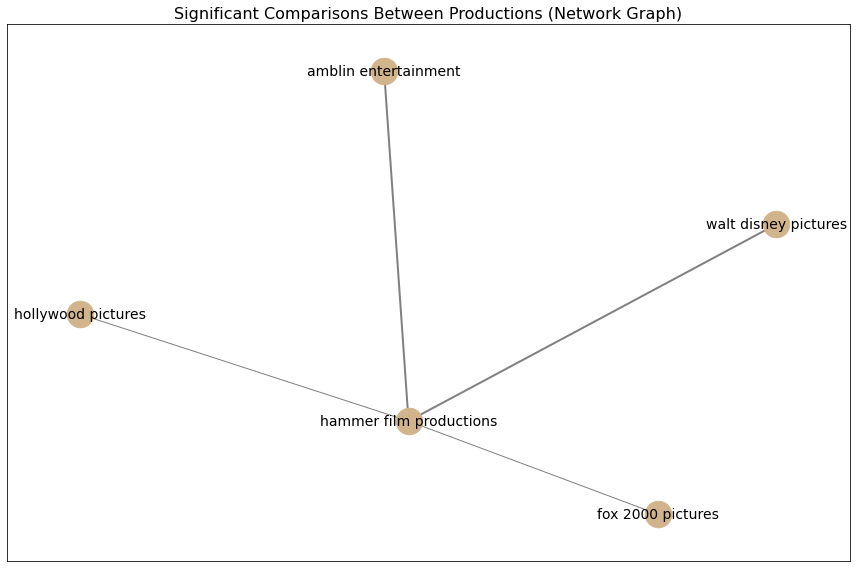

Fox 2000 Pictures, renowned for its diverse portfolio, achieves an impressive 72.55% rate of happy endings. This balance reflects their knack for weaving both uplifting and bittersweet narratives, striking a chord with audiences who enjoy a mix of emotions.
The Scene Setup: The Production of the Movie and Its Ending
Let's dive here into a new investigation where we delve into the heart of movie production. We will examine the intricate connection between production names and the type of endings in movies. So, grab your magnifying glass as we uncover the clues hidden within the data.
As our story begins, we are presented with a dataset of movies, complete with details about their budgets, scores, and production companies. Our first challenge is to clean the data: removing movies with missing or zero budget. Think of it like sifting through a pile of evidence—filtering out the noise to focus on the more promising leads.
Once the data is cleaned and ready, we set our sights on one specific question: Do production scale affect the type of ending chosen?
The Investigation
We start by diving into the dataset with a close look at the score variables. The first key step is to test whether there’s a correlation between a movie’s production and its score.
But of course, data alone is not enough. We need to apply the scientific method. So, we move on to the statistical testing phase:
- Shapiro-Wilk Test: This test determines if our groups follow a normal distribution—essential for applying parametric tests.
- Levene’s Test: To check if the variances between groups are consistent, which is crucial for our next step.
- ANOVA or Kruskal-Wallis Test: If both normality and variance homogeneity hold, we proceed with an ANOVA. Otherwise, we use the non-parametric Kruskal-Wallis test to ensure robustness.
We carry out these tests with precision, verifying that our comparisons between different production companies hold up under scrutiny. We focus on productions with a sufficient sample size—at least 50 films per group. The results of our statistical tests determine whether there is a significant difference in how different productions approach movie endings.
Our investigation begins with a crucial discovery: we found a significant difference between the groups. This first clue leads us deeper into the mystery, prompting us to dig further. To uncover the details behind this difference, we turn to Dunn’s Test. This test allows us to pinpoint exactly where the significant differences lie between the groups. The p-values from these tests serve as the final pieces of the puzzle, guiding us toward the answer.
The Turning Point
As the investigation deepens, we find ourselves looking at the results of Dunn’s Test, which allows us to highlight the most significant comparisons between production companies. These comparisons reveal whether certain studios consistently lean toward specific types of endings, and the p-values serve as the final clue to this mystery.

In a dramatic twist, our findings reveal which production companies are most likely to influence the outcome of a film, based and production scale. We can now reveal which studios might be more inclined to deliver the ever-popular happy endings—and the reasons behind this trend.
We can see that the Hammer Production has significant differences with Hollywood, the Walt Disney Pictures, the Fox 2000 Pictures, the Amblin Entertainment, and the Hollywood Pictures. As detectives piecing together the mystery of movie endings, the bar plot above became a crucial piece of evidence. It revealed that Hammer Production stands out as one of the studios with the lowest scores, a clear sign that they have a marked inclination toward crafting movies with unhappy endings. In contrast, the other production companies—Hollywood, Walt Disney Pictures, and the rest—shine as consistent producers of films with overwhelmingly happy conclusions. This pivotal clue brings us one step closer to unraveling the enigma of how studios shape the emotional journeys of their audiences.
With this revelation in hand, we dive deeper into the four highlighted productions. Their contrasting approaches to storytelling deserve a closer examination, as they may hold the key to understanding the broader patterns in movie endings. Let’s step into their world and uncover the evidence hidden within their films:
Amblin Entertainment surpasses expectations with 77.78% of their films concluding on a joyful note. Known for creating heartwarming stories, their productions continue to inspire generations, leaving viewers with a sense of nostalgia and optimism.
Walt Disney Pictures—often synonymous with magical endings—delivers 70.77% of happy conclusions. Their family-friendly joy and enchanting narratives remain a cornerstone of their global legacy, captivating audiences of all ages.
Hammer Film Productions takes a dramatically different route, with only 42.62% of its films ending happily. This divergence hints at their preference for exploring darker, more complex storylines, cementing their reputation as pioneers in gothic and horror cinema.
The Final Chapter
With the data analyzed and the tests completed, we can confidently say that the production company plays a significant role in determining the type of ending a movie will have. Some production houses are more likely to opt for endings that appeal to mass audiences, especially happy endings. However, as in any good detective story, the plot is never completely simple, and the nuances of individual films still carry their weight in the narrative.
So, there you have it—a thrilling investigation into the world of movie production and its influence on storytelling choices. Stay tuned for more clues as we continue to uncover hidden patterns in the world of cinema!